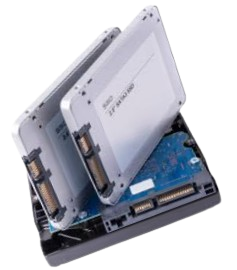
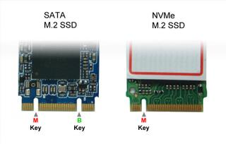

Index
What Are Solid-State Drives (SSD)?

Solid State Drives, commonly known by the acronym SSD (Solid State Drive), are a new generation of data storage devices that have progressively replaced traditional mechanical hard disk drives (HDDs).
Unlike HDDs, which store information on rotating magnetic platters, an SSD uses an array of solid-state memory chips. This means that SSDs contain no moving or mechanical parts whatsoever. All information is stored through electrical impulses, making these devices extremely fast, silent, and resistant to shocks or vibrations.
NAND Flash Technology
The core technology that allows SSDs to retain information even when the computer is turned off is non-volatile NAND Flash memory.
At a microscopic level, an SSD is made up of billions of memory cells that act as tiny switches (floating-gate transistors) capable of trapping electrons and maintaining a binary state (zeros and ones).
Memory Cell Density
The capacity, durability, and price of an SSD depend directly on the amount of information that can be stored in each physical memory cell. There are four main classifications:
- SLC (Single-Level Cell): Stores 1 bit per cell. It is the fastest technology with the longest lifespan, but its very high cost limits it almost exclusively to enterprise servers.
- MLC (Multi-Level Cell): Stores 2 bits per cell. It offers a good balance between performance and durability.
- TLC (Triple-Level Cell): Stores 3 bits per cell. It is currently the standard for most personal computers, helping reduce device costs.
- QLC (Quad-Level Cell): Stores 4 bits per cell. These are the most affordable and highest-capacity SSDs available today, although they offer slightly lower speeds and a shorter lifespan.
Evolution: 3D NAND Memory
Initially, memory cells were arranged side by side on a flat surface (2D). To overcome physical space limitations inside chips and increase storage capacity, the industry developed 3D NAND (or V-NAND) technology. This technique consists of stacking memory-cell layers vertically to create three-dimensional structures. Thanks to this innovation, modern SSDs can offer several terabytes (TB) of storage in formats as small as a stick of chewing gum (M.2).
How an SSD Works
Since there are no spinning platters or moving heads searching for data, SSD operation is entirely based on electronic management and parallel processing.
The Controller
The most important component of an SSD, besides the memory chips themselves, is the controller. It is a small but powerful integrated processor that acts as the "brain" of the drive. Its job is to communicate with the computer's motherboard and determine exactly which memory cells should be used to read or write incoming data.
The Read and Write Process
- Reading: When the operating system requests a file, the controller instantly locates the exact memory addresses and sends electrical signals to retrieve the data. Since there is no mechanical seek time (physical latency), information is loaded almost instantly.
- Writing and Erasing: NAND memory has a unique characteristic: it cannot overwrite data directly on a cell that already contains information. To update a file, the controller must first read an entire block of cells, erase it completely, and then rewrite the modified data. This process, known as the "erase-write cycle", is responsible for the gradual wear of the drive.
TRIM Command
To reduce wear and avoid the slowdown caused by write and erase operations, modern SSDs use the TRIM command. This command, sent by the operating system, informs the SSD controller which data blocks are no longer in use and can be erased in the background. As a result, when the user needs to save a new file, the SSD already has empty blocks available for immediate writing, maintaining maximum performance over time.
Types of Solid-State Drives
There are two main types of SSD drives:

- mSATA III, SATA III and traditional SSDs: Although SATA SSDs are probably the most common, they are considered somewhat of a legacy technology because they were originally designed to replace traditional hard drives. Depending on your device, such as a desktop PC, you may need a mounting bracket or enclosure. While their ease of installation helped promote SSD adoption, the SATA interface is gradually being replaced by PCIe and NVMe SSDs. Compared with newer SSD technologies, mSATA III, SATA III and traditional SSDs are limited in terms of speed and performance.
- PCIe and NVMe SSDs: More recent form factors, such as U.2 and M.2 SSDs, use an interface protocol known as Non-Volatile Memory Express (NVMe), developed jointly by companies within the NVM Express working group, including Samsung, Intel and Seagate. NVMe operates over Peripheral Component Interconnect Express (PCI Express or PCIe) to deliver very high data transfer speeds, reaching read speeds above 3000 MB/s. Reduced latency makes this type of SSD especially suitable for gamers and gaming consoles. These SSDs often include heatsinks to prevent overheating.
Advantages and Disadvantages
Advantages
- High Performance: Solid-state drives are faster than hard disk drives thanks to their flash memory technology, making them ideal for running applications, booting Windows or macOS, and transferring files. However, as available storage space decreases, SSD performance may gradually decline.
- Ease of Use: SSDs are easy to install and contain no moving parts. Their small size and low weight also make them extremely portable, making them very attractive for popular mobile devices such as MacBooks and iPads.
- Durability and Reliability: Thermal issues caused by high rotations per minute (RPM) and mechanical wear lead to deterioration and degradation in hard drives over time, making them vulnerable to vibrations, drops, and shocks. SSDs avoid these problems because they have no moving components.
Disadvantages
- Limited Number of Write Cycles: The main disadvantage of SSDs is that they have a limited number of write operations during their lifetime. However, techniques such as wear leveling and over-provisioning help enterprise-class SSDs withstand many years of continuous use.
- Cost: Although the cost per storage unit (gigabytes [GB] or terabytes [TB]) is higher for SSDs than for HDDs, SSDs consume less energy. Unlike HDDs, SSDs do not require electricity to spin disks up from rest. Their design helps companies reduce energy costs.